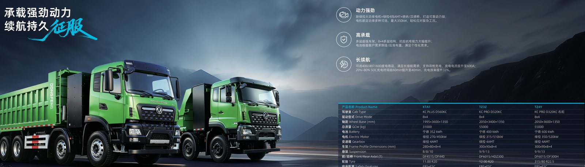

An electric truck is only as valuable as its battery resale story, and Dongfeng's 8-year warranty transfer is the lever that lifts used prices. The KTH3 electric cargo truck carries a transferable CATL LFP pack warranty, so a second owner inherits coverage and pays more. This guide explains how the transfer works and why it adds 10 to 15 percent to resale.
Residual value follows battery health. A diesel truck's worth tracks engine hours; an electric truck's worth tracks remaining pack capacity. The KTH3 uses a 336 kWh CATL LFP pack rated for 8 years or 4,500 cycles, and because LFP holds capacity far better than older cells, the pack still carries range at resale. A documented warranty that transfers to the new owner is the single biggest factor in that resale price.
In the Nigeria electric truck market, used trucks move between logistics firms, so a transferable warranty is not a nice-to-have but a sales condition. A Dongfeng EV truck with clean warranty paperwork clears the second-hand market faster and at a higher number than a grey import with no battery proof.
The table below shows what moves with the truck when the first owner sells the KTH3 within the coverage window.
| Item | Transfers? | Condition |
|---|---|---|
| Battery capacity cover | Yes | Below 80% within term |
| 8-year / 4,500-cycle limit | Yes | Whichever first |
| Charge-log requirement | Yes | Records handed over |
| Swap pack history | Yes | If swap used |
| Accident exclusion | No | Undeclared damage voids |
The KTH3 electric cargo truck keeps its warranty as long as the pack serial is registered and the service record travels with the vehicle. That simple step is what separates a higher resale from a discounted sale.
A clean transfer needs discipline from day one. The list below keeps the value intact through ownership changes.
Because the KTH3 runs a 336 kWh pack with 250 to 270 km of range and a 5 to 6 minute swap option, buyers should also record duty cycles so the next owner sees realistic remaining life. A Dongfeng EV truck with a transparent history sells at a premium the grey market cannot match.
The premium exists because risk drops. A second owner who inherits an 8-year or 4,500-cycle warranty knows the 336 kWh pack is covered to 80 percent capacity, removing the biggest fear in used EV buying. That confidence shows up as 10 to 15 percent extra on the resale price versus an undocumented pack, and the gap widens as more buyers learn to ask for the warranty file.
The Nigeria electric truck market rewards durability, and a transferable warranty signals a truck that will keep earning. Fleets that plan to rotate trucks every three to four years should factor this premium into their write-down, because the documented electric truck returns more capital at trade-in than an undocumented rival.
Model the KTH3 over seven years with the warranty premium baked into years four through seven. The 336 kWh pack's long cycle life means the truck is still capable at resale, and the FOB range of $45k to $180k by model places the KTH3 in the mid band where used demand is strongest. A buyer who pays slightly more new recovers it at sale, so the effective cost of ownership narrows further.
Keep the warranty transfer in mind when choosing chargers and swaps. A pack charged gently and swapped on schedule shows better capacity at inspection, which the next owner pays for. Treat the battery file as an asset, because for an electric truck it literally is one.
A buyer should request the pack health report before any resale, because it is the document that sets the price. The report shows remaining capacity against the 336 kWh rated energy and the cycle count against the 4,500-cycle limit, with the 8-year clock as the other bound. A KTH3 that still reads above 80 percent capacity and sits inside the term is worth markedly more, and the CATL LFP chemistry tends to hold that level. The report, plus the charge logs, is what lets a second owner trust the electric truck instead of discounting it for fear of a hidden pack fault.
In the Nigeria electric truck market, used trucks move between logistics firms, contractors and new entrants, so a clean resale channel already exists for documented units. List the KTH3 with its warranty file attached, because buyers there ask for the battery proof first and pay for it. A transferable 8-year or 4,500-cycle warranty is the difference between a quick sale at a premium and a discounted wait, and the 336 kWh pack's strong cycle life keeps the report favorable well into the ownership window.
If the KTH3 used battery swap, record each exchange in the warranty file, because a documented swap history reassures the next owner that the pack was maintained inside the certified network. Swap actually protects value, since the pack avoids unpredictable field charging and stays within thermal limits. A buyer seeing a clean swap log and the original pack serial registered at delivery will pay the 10 to 15 percent premium willingly, because the risk that defines used EV buying has been removed by paperwork rather than by hope.
At sale, complete the manufacturer transfer form within 30 days and hand over the full file: pack serial, charge logs, service stamps and any swap record. The KTH3 electric cargo truck keeps its coverage only if that chain is intact, so treat the documents as part of the asset, not loose paper. A seller who does this consistently builds a reputation in the used market, and reputation is what lets the next electric truck sell faster and higher, compounding the residual-value gain across the whole fleet.
The best resale moment is inside the warranty term with the pack still above 80 percent, because that is when the transferable coverage carries the most value to a second owner. Plan the trade-in around year three or four, while the 336 kWh CATL LFP pack is healthy and the 8-year or 4,500-cycle limit is far from reached, and the 10 to 15 percent premium is easiest to capture in the used market. Early planning protects the gain that the warranty was designed to create.
At trade-in, present the pack serial registration, the full charge logs, the service stamps and any swap record in one folder so the buyer can complete the transfer form within 30 days. The KTH3 electric cargo truck keeps its coverage only if that chain is intact, and a complete file is what lets the 10 to 15 percent premium actually land on the sale price. Sellers who standardise this folder across the fleet build a reputation that compounds with every resale and shortens each next negotiation.
Register the pack at delivery, log every charge, and complete the transfer form at sale. The KTH3 electric cargo truck is built to hold value, and the export desk supplies the warranty documents your resale needs. Contact Shaanxi Fenghan Trading for a quote on an electric truck whose battery story survives ownership.
Ready to electrify your fleet? Contact Shaanxi Fenghan Trading — authorized Dongfeng EV truck exporter. WhatsApp: +86 153 1943 1311 | Email: sales@fenghan-trade.com | dongfengevtrucks.com
🌐 Our Network: Fenghan Trade (SAGMOTO/SHACMAN Truck Export) · heavy duty trucks export China